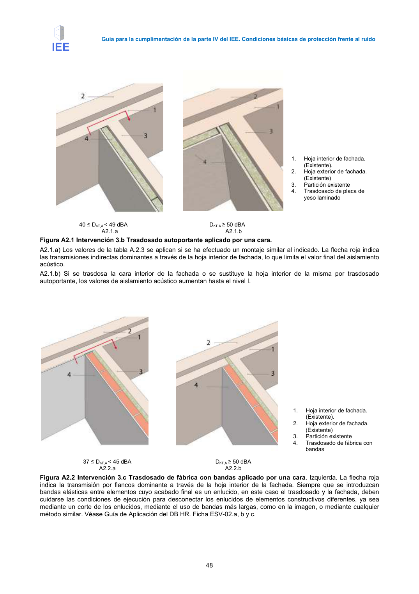

GUIA · Página 58 · versión 2016-11-01
SHA256: 813669d3066c0ff79457d57b80b0512a4fbb248bc5db1f7baf473c369a064738 · página física 58 de 65 · métodos de encabezado
solo si están cotejados.
Formatos: Markdown · JSON de bloques · PDF p. 58 · imagen PNG
Guía para la cumplimentación de la parte IV del IEE. Condiciones básicas de protección frente al ruido 48 1. Hoja interior de fachada. (Existente). 2. Hoja exterior de fachada. (Existente) 3. Partición existente 4. Trasdosado de placa de yeso laminado 40 ≤ DnT,A < 49 dBA DnT,A ≥ 50 dBA A2.1.a A2.1.b Figura A2.1 Intervención 3.b Trasdosado autoportante aplicado por una cara. A2.1.a) Los valores de la tabla A.2.3 se aplican si se ha efectuado un montaje similar al indicado. La flecha roja indica las transmisiones indirectas dominantes a través de la hoja interior de fachada, lo que limita el valor final del aislamiento acústico. A2.1.b) Si se trasdosa la cara interior de la fachada o se sustituye la hoja interior de la misma por trasdosado autoportante, los valores de aislamiento acústico aumentan hasta el nivel I. 1. Hoja interior de fachada. (Existente). 2. Hoja exterior de fachada. (Existente) 3. Partición existente 4. Trasdosado de fábrica con bandas 37 ≤ DnT,A < 45 dBA DnT,A ≥ 50 dBA A2.2.a A2.2.b Figura A2.2 Intervención 3.c Trasdosado de fábrica con bandas aplicado por una cara. Izquierda. La flecha roja indica la transmisión por flancos dominante a través de la hoja interior de la fachada. Siempre que se introduzcan bandas elásticas entre elementos cuyo acabado final es un enlucido, en este caso el trasdosado y la fachada, deben cuidarse las condiciones de ejecución para desconectar los enlucidos de elementos constructivos diferentes, ya sea mediante un corte de los enlucidos, mediante el uso de bandas más largas, como en la imagen, o mediante cualquier método similar. Véase Guía de Aplicación del DB HR. Ficha ESV-02.a, b y c.
